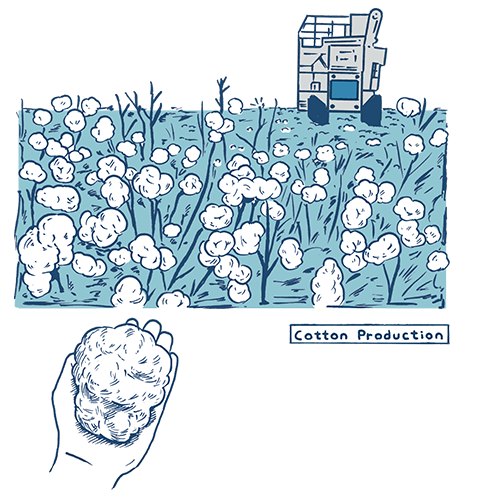
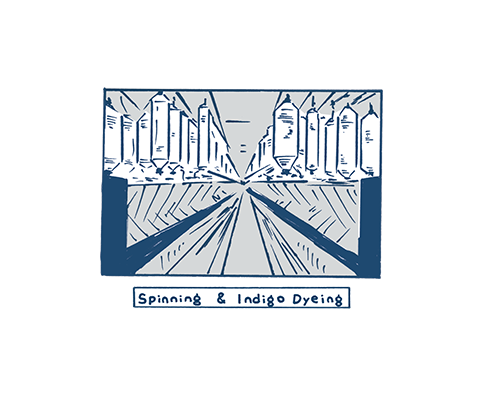
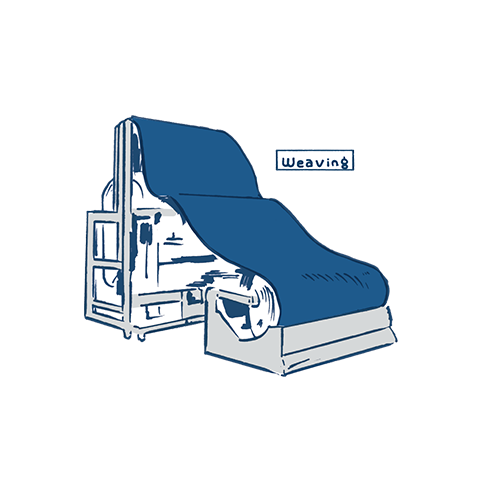
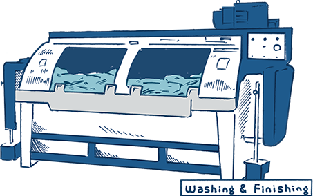
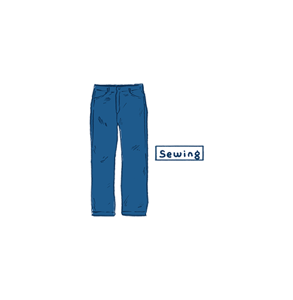
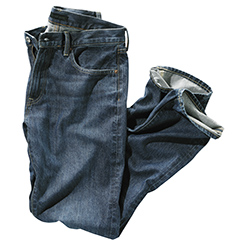
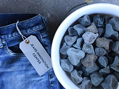
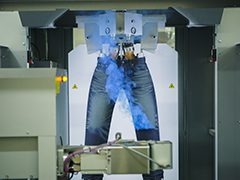

지금까지의 진의 가공과정에는 많은 양의 물이 사용되었습니다. 새롭게 개발된 Blue Cycle Denim 기술은 레이저 및 나노 버블의 세탁기와 같이 발전된 기술을 사용하며, 이러한 전문적인 기술을 통해 기존 물 사용량의 99%까지 줄입니다. 그리고 이 기술은 2020년까지 UNIQLO Jeans의 전 라인에서 실시될 예정입니다.
더욱 지속 가능한 Jean의 개발
Jeans Innovation Center
Jeans Innovation Center는 Los Angeles에 위치한 연구개발 시설입니다.
전 세계 전문가들이 모여 혁신적인 기술과 새로운 소재를 활용해 지속가능한 Jeans을 개발하고 있습니다.

Jeans의 생산과정에서 물 사용
면화 재배에는 햇빛, 땅, 그리고 물이 필요합니다.
면화에서 실이 되는 과정,
실에서 다시 인디고 염료로 염색되는 과정,
마무리 워쉬 가공에도 대량의 물이 사용된 다음 폐수로 배출되고 있습니다.
수자원 절감을 위한 3가지 시책을 소개합니다.
- 
-
서스테이너블 대책❶
코튼(면화)재배에서 사용되는 물
유니클로는 서스테이너블 코튼 생산을 지향하는 NGO
「베터 코튼 이니셔티브(Better Cotton Initiative)」(BCI)에 가맹하고 있습니다. BCI에서는 코튼을 생산하는 농가에 물의 적절한 사용이나 살충제 등의 농약 사용 방법을 교육하는 것으로 코튼의 더욱 좋은 재배 방법을 보급시키는 시책을 실시하고 있습니다. https://bettercotton.org/
- 
-
서스테이너블 대책❷
소재 제조 공정에서사용하는 물
유니클로가 거래하는 데님 공장에서는 생산 과정에서 발생하는 배수의 정화와 재이용, 배수량 저감 등에 주력하고 있습니다.
- 
- 
- 
-
서스테이너블 대책 3❸
가공 공정에서 사용하는 물
색이 바랜 느낌 등의 디자인을 더하기 위해 봉제된 진의 마지막 공정에서 돌 등과 함께 세탁기에 넣고 세탁합니다. 유니클로에서는 이번에 이 공정에서 사용되는 물의 저감에 주력해왔습니다
Denim 의 마지막 가공과정 내에서 물의 사용을 줄이는 기술

Eco Stones 워싱

유니클로는 기존 워싱과정에서 사용되어온 경석을 오랜 기간 재사용이 가능한 친환경 인공석으로 교체하였습니다. 제조과정에서 친환경 인공석을 사용함에 따라, 우리는 경석 사용 당시에 필요했던 물과 발생한 먼지의 양을 최소화 할 수 있었습니다.
Laser 기술을 통한 Jeans의 생산

레이저 기술을 사용함에 따라 우리는 Jean 생산과정에서의 노동량과 물의 사용을 줄일 수 있습니다.